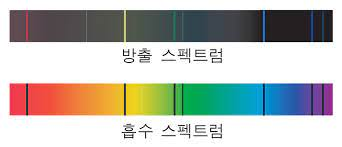

방출 스펙트럼은 한 원소 또는 여러 원소가 합해져 있는 분자의 전자들이 들뜨게 될 때, 방출되는 전자기파 스펙트럼이다.
각 원자의 방출 스펙트럼은 독특하며 그 원소가 알려지지 않은 분자들의 일부인지 아닌지를 결정해 주는 데 쓰일 수 있다.
비슷하게 분자의 방출 스펙트럼은 화학적인 분석을 위해 사용된다.
물질의 흡수 스펙트럼은 주파수 영역에 걸쳐 물질에 의해 흡수된 전자기 복사의 일부를 보여준다.
이 흡수 스펙트럼은 방출 스펙트럼과는 정 반대 현상이다.
모든 화학적인 요소들은 그것의 원자 궤도의 에너지 준위 사이의 차이와 상응하는 몇몇의 특정한 파장에 흡수선을 가진다.
그러므로, 흡수선 스펙트럼은 가스나 액체 안에 현재 화학적인 원소들의 종류를 확인하는 데 쓰일 수 있다.
이 방법은 직접적으로 측정할 수 없는 별 그리고 그 밖의 가스로 구성된 물체들의 화학적인 원소의 존재를 추론하는 데 쓰인다.
